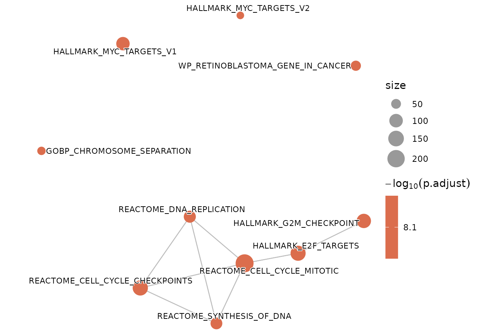

The emapPlot function generates a network-based enrichment
map visualization for Gene Set Enrichment Analysis (GSEA) results stored in
a SummarizedExperiment object. Each node represents a pathway or
gene set, and edges represent pairwise similarity between pathways based on
shared genes. This visualization provides an overview of functional
relationships among enriched terms.
Usage
emapPlot(
seDataFgsea,
showCategory = 10,
layout = igraph::layout_with_kk,
color = "p.adjust",
sizeCategory = 1,
minEdge = 0.2,
fontSize = 3,
colorEdge = "grey",
sizeEdge = 0.4,
nodeLabel = "category"
)Arguments
- seDataFgsea
A
SummarizedExperimentobject containing GSEA results and pairwise pathway similarity information, typically extracted using.extractDF(type = "gseaSimilar").- showCategory
Numeric or character. The number of top pathways to display, or a vector of specific pathway names to include. Default is
10.- layout
A layout function from the igraph package to position nodes in the network. Default is
igraph::layout_with_kk.- color
Character. Variable used for node color encoding. Must be one of
"pvalue","p.adjust", or"qvalue". Default is"p.adjust".- sizeCategory
Numeric. Scaling factor for node sizes. Default is
1.- minEdge
Numeric. Minimum similarity threshold for retaining edges in the network (range: 0–1). Default is
0.2.- fontSize
Numeric. Font size of node labels. Default is
3.- colorEdge
Character. Color of connecting edges between nodes. Default is
"grey".- sizeEdge
Numeric. Edge line width. Default is
0.4.- nodeLabel
Character. Determines which nodes are labeled in the plot. Accepts
"category","all", or"none". Default is"category".
Value
A named list with two components:
emapPlotA
ggplot2network visualization showing pathways (nodes) and their functional relationships (edges).tableEmapPlotA
data.framesummarizing node attributes used in the plot, including:labelName: Pathway or term labelsize: Node size valuescolor: Color aesthetic value (when applicable)
Details
This function provides a simplified implementation of
enrichplot::emapplot() with a clean SigFun-style aesthetic. Nodes
are colored by the statistical significance (e.g., p.adjust) and
sized according to pathway gene counts.
The edge structure between pathways is derived from pairwise similarity
scores precomputed by .extractDF(type = "gseaSimilar").
Visual encoding follows the SigFun design standard:
Node color: Encodes -log10(significance)
Node size: Reflects pathway or gene set size
Edge thickness: Represents similarity between pathways
Labels: Optional display controlled by
nodeLabel
Note
Requires enrichplot (>= 1.21.0) and ggtangle (>= 1.0.0) for consistent network visualization behavior.
Examples
data("sig2Fun_result")
emapPlot(seDataFgsea = sig2Fun_result)
#> $emapPlot

#>
#> $tableEmapPlot
#> labelName size color
#> 1 HALLMARK_G2M_CHECKPOINT 117 7.269352e-09
#> 2 HALLMARK_MYC_TARGETS_V1 98 7.269352e-09
#> 3 HALLMARK_MYC_TARGETS_V2 42 7.269352e-09
#> 4 REACTOME_CELL_CYCLE_MITOTIC 220 7.269352e-09
#> 5 WP_RETINOBLASTOMA_GENE_IN_CANCER 53 7.269352e-09
#> 6 REACTOME_CELL_CYCLE_CHECKPOINTS 138 7.269352e-09
#> 7 REACTOME_DNA_REPLICATION 75 7.269352e-09
#> 8 GOBP_CHROMOSOME_SEPARATION 43 7.269352e-09
#> 9 REACTOME_SYNTHESIS_OF_DNA 71 7.269352e-09
#> 10 HALLMARK_E2F_TARGETS 135 7.269352e-09
#>